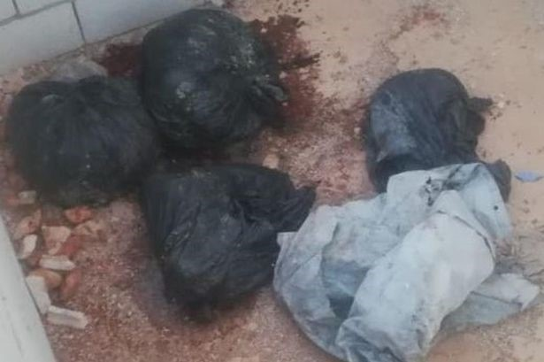

SCP-CA-002 (Bleem)
Item #: SCP-CA-002
Object Class: Euclid
Special Containment Procedure: Foundation web crawlers will search the European and North American servers for any instances of SCP-CA-002-1 (Referred to below as CA-002-1). Once detected, class A instances will be immediately removed. Class B instances will be sent to MTF Omega-073 “Demon Number”, who will then examine the content and decide whether it is to be: discarded due to irrelevance, removed immediately, removed immediately and administer amnestic to witnesses, or removed immediately and interview witnesses post-containment. All people coming into contact with the knowledge of the existence of SCP-CA-002 (referred to as CA-002) and/or studying relevant topics must be first assessed and determined to be level 3 or higher by the Scranton-2.03 Memetic Immunity Test (SMIT). Foundation agents will remain undercover in mathematical institutions worldwide to prevent accidental creation of CA-002-1 or discovery of CA-002, and reports will be made regularly to Omega-073 “Demon Number” should concerns be raised.
The memetic department and reality department is to continue research regarding CA-002 and its anomalous properties. Researchers must be determined to be level 1 or higher by the SMIT.
Description: CA-002 is an integer existing between the integers 3 and 4, named Bleem by its first discoverer, Dr. ███ █████. The existence of CA-002 is mathematically proven, and although counter-intuitive and unobservable in nature, CA-002 has proven to have bearing on many random effects in the universe that was seemingly unpredictable. Deployment of CA-002 as a constant in many relevant equations and formulae has proven to be useful, as CA-002 allows for a cohesive and predictable model to be developed. The existence of CA-002 is a memetic knowledge, and is proven to be hazardous. In the first five to six (5 – 6) hours of exposure to said memetic hazard, the victim grows increasingly conscious of the existence of CA-002. After around a day of exposure, the victim reports to not be able to think about anything other than CA-002 and its nature, oftentimes by experimenting with objects around them to recreate the concept of CA-002. Such attempts are obviously futile, as CA-002 cannot be recreated nor exists in the natural world. After around a week of exposure, victims often attempt to recreate CA-002 by dismembering live animals. During this stage, victims will use all means possible to obtain live animal samples, which will be immediately dismembered, and its body parts arranged into representations of the integers 3 and 4 in various notation systems, and body fluid used to make connections between the integers. Victims has shown no interests in dead bodies of animals or humans, nor did they show interest in plants, either dead or alive. After a few experimentations, victims will attempt to recreate CA-002 with live, human samples. Interview with victims at this stage show a general, complete disregard of social norms and morality, although some victims claim that their research was done to fulfill the utilitarian principle. If victims cannot obtain a human that is alive in this stage, they will dismember their own body, displaying no symptoms of pain or discomfort while doing so, and has no intention of calling for help, resulting commonly in their own death. If a human sample is obtained during this stage, the human sample will be dismembered, and its body parts and fluids used in an identical manner as that of the live animal samples dismembered by the victim. Class A or C amnestic has proven to be effective across all stages, successfully restoring normality and sanity within the victims as long as their memories regarding CA-002 has been removed. Moreover, certain people with memetic immunity have proven to be resistive towards the effects of the memetic hazard of CA-002.
CA-002-1 is any information hinting upon, or directly mentioning, the existence of CA-002. CA-002-1 is memetic in nature, and oftentimes hazardous, as it drives people to attempt to discover CA-002, resulting in the hazardous memetic information contained within the knowledge of existence of CA-002. CA-002-1 is effective to people across all backgrounds, regardless of religion, gender, age, or previous mathematical and scientific knowledge. As it stands right now, 2,003,093 copies of CA-002-1 has been removed or filtered by the foundation. Investigation is underway by MTF Omega-073 “Demon Number” to determine the possibility of organized manufacturing of CA-002-1.
Addendum 1: Experimentation of CA-002
Foreword: The purpose of this experiment was to determine the exact anomalous nature of the memetic hazard contained by the knowledge of the existence of CA-002. A D-class personnel (D2005), rated level 5 on the SMIT and having no prior knowledge or interest in mathematics, was chosen to be the subject of this experiment. He was presented a copy of CA-002-1 at the beginning of the experiment.
[Data Expunged, see .docx file below for content]
MESSAGE: Virtual memetic hazard observed. MTF Omega-037 is dispatched to your location.
Addendum 2: Relevant Photos
2.1:
Part of an advertisement poster for a movie that was an instance of CA-002-1. This instance was one of the first discovered.
2.2:

Picture of the remains of the family of a victim after exposing to CA-002-1. His family was murdered by himself roughly 200 hours after exposure to CA-002-1.
2.3:
Part of the proof of CA-002, written on the cell wall of D2005. Pixelated to remove memetic effects.
-2022.11.18，Rothesay NB，Tony Su
Click Me For Document Download as .docx File